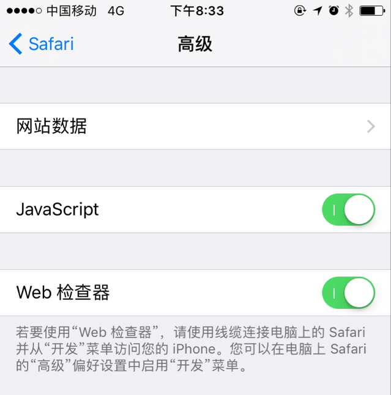
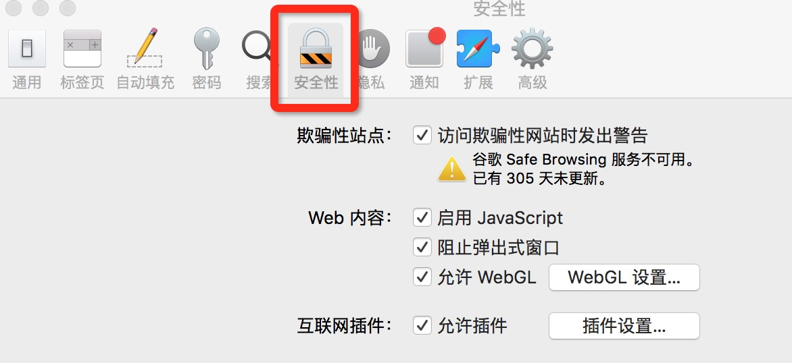
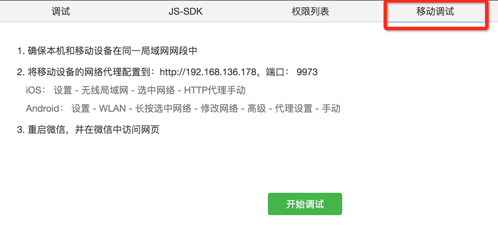

真机调试h5页面
spy-debugger（无线）
首先用命令安装spy-debugger： sudo npm install spy-debugger -g
手机和PC保持在同一网络下
命令行输入spy-debugger，按命令行提示用浏览器打开相应地址
设置手机的HTTP代理，代理IP地址设置为PC的IP地址，端口为spy-debugger的启动端口(默认端口：9888)
安卓机调试h5页面（有线）
首先安装chrome代理插件Proxy SwitchyOmega
设置手机为开发者模式
用数据线连接手机和电脑
在chrome中输入：chrome://inspect/#devices
iOS调试h5页面（有线）
打开手机设置->safari->高级把javascript和web检查器都开打
用数据线连接手机和电脑
打开safari浏览器，找到开发模块(如果没有开发模块，请找到Safari->偏好设置按照下图设置)，下面有对应的手机能看到正在调试的页面
微信里面真机调试h5页面
首先安装微信web开发者工具
点击移动调试，按照提示步骤设置好代理
点击开始调试，如果数据没有加载过来就在微信里刷新一下页面
tip:为了保证开发者身份信息的安全，对于希望调试的公众号，要求开发者微信号与之建立绑定关系。具体操作为：公众号登录管理后台，启用开发者中心，在开发者工具——web 开发者工具页面，向开发者微信号发送绑定邀请(有疑问？)